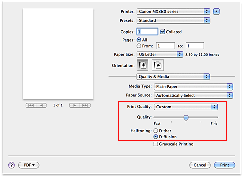

The procedure for setting the print quality level and the halftoning method is as follows:
-
Select Quality & Media from the pop-up menu on the Print Dialog
-
Select the print quality
Select Custom for Print Quality.
 -
Setting the print quality and halftone expression method
Move the Quality slider to select the quality level.
Select the expression method in Halftoning. Note
Note
-
Halftones refer to color shades between the darkest color and the brightest color.
The printer replaces the color shades with a collection of small dots to express the halftones. Dither arranges the dots according to fixed rules to express the halftones. Diffusion places the dots randomly to express the halftones.
-
-
Complete the setup
Click Print.
When you execute print, the image data is printed with the selected print quality level and halftoning method.
 Important
Important
-
Certain quality levels and halftoning methods cannot be selected depending on the settings of Media Type.